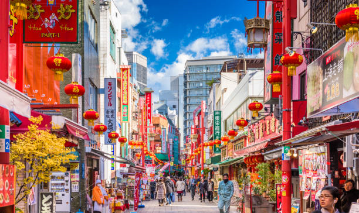
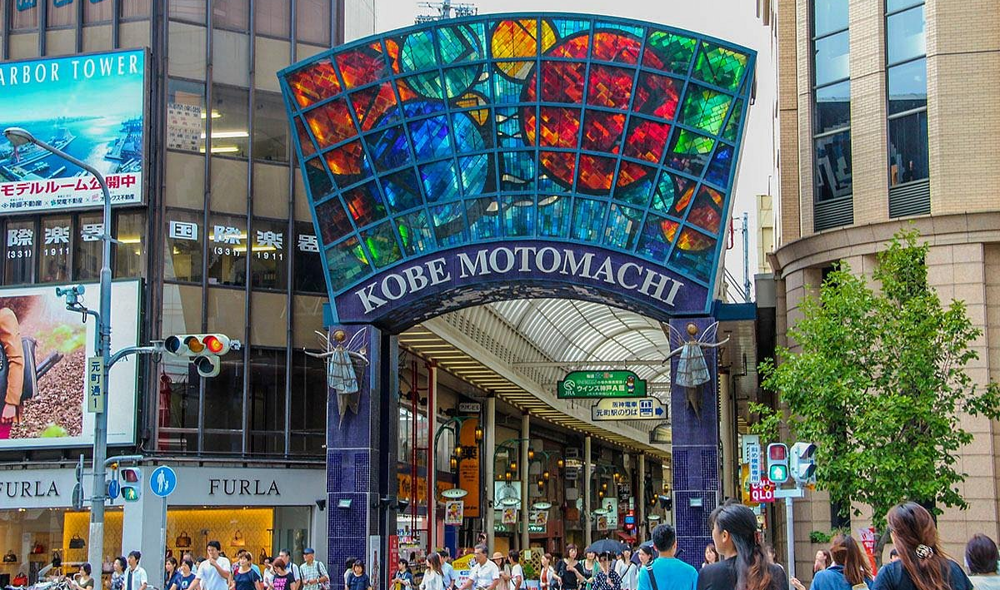

Kōbe, uma das cidades mais encantadoras do Japão, é famosa por sua mistura de beleza natural e urbanidade moderna. Localizada entre o mar e as montanhas, Kōbe oferece uma rica variedade de experiências, desde o icônico Porto de Kōbe até o sereno Monte Rokko. A cidade é conhecida mundialmente por sua carne de Kōbe, uma iguaria gourmet apreciada por chefs do mundo todo. Kōbe também possui uma vibrante cena cultural, com museus como o Museu da Cidade de Kōbe e o Museu Marítimo de Kōbe, além de eventos tradicionais como o Festival de Luminarie. Com seus bairros cosmopolitas, como Kitano, e sua hospitalidade calorosa, Kōbe é uma cidade que encanta e acolhe todos os visitantes, proporcionando memórias inesquecíveis.
 